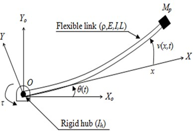

Problem Statement
Flexible underwater manipulators exhibit complex dynamic behaviour: hydrodynamic added mass, structural compliance, and coupling between rigid-body rotation and elastic deflection. Operating such a manipulator near one of its natural frequencies risks resonance — and potentially structural failure — so characterising these frequencies accurately, including the effect of the surrounding fluid, is essential before deployment.
Modelling Approach
- Modelled the manipulator as a rotating Euler-Bernoulli beam, where total deflection combines a rigid-body rotation term and an elastic deflection term described by Hermitian shape functions.
- Discretised the beam into linear finite elements (2 DOF per node: transverse deflection and rotation), and derived the elemental mass and stiffness matrices in closed form from kinetic and potential energy expressions via the Lagrangian.
- Incorporated hydrodynamic added mass directly into the element mass matrix to capture the effect of the surrounding fluid on the system's dynamics — critical for any underwater structure, where added mass can rival or exceed the structural mass itself.
- Included the tip payload mass as a separate inertia contribution, to study how an end-effector load shifts the system's resonant behaviour.
- Converted the assembled system into an eigenvalue problem in the frequency domain, then solved it using a frequency-marching procedure — sweeping frequency and tracking deflection peaks to locate resonances, since the boundary conditions made a direct eigenvalue solve impractical.
Validation Against Published Literature
Rather than developing the model in isolation, the implementation was directly validated against a published case study (Vibroengineering Journal) using matching physical parameters — a 900 mm PVC manipulator link with a 30 mm outer / 28 mm inner diameter. In the process of validation, two inconsistencies were identified in the reference paper: the reported material density appeared to be a typo (corrected using independently sourced PVC density data), and the reported second moment of inertia was recalculated directly from the beam's cross-sectional geometry rather than taken at face value.
With these corrections, the model's predicted resonance frequencies showed good agreement with the paper's reported values, and a mesh convergence study confirmed the solution stabilises beyond six elements — standard practice for establishing that a finite element result is mesh-independent rather than an artifact of discretisation.
Key Results
- Mesh convergence achieved beyond 6 elements, with the first three resonant modes stabilising at approximately 18.88 Hz, 61.0 Hz, and 127.3 Hz (including hydrodynamic added mass).
- Adding a 0.5 kg tip payload shifted natural frequencies downward, consistent with the added inertia at the end-effector — highlighting why payload mass must be accounted for at the design stage.
- Cross-referencing wave excitation frequencies (~1 Hz in shallow water) against the computed modal frequencies confirmed the design operates safely away from resonance in shallow-water conditions, with or without payload.
- Since structural and fluid damping were not modelled, the frequency-marching deflection amplitudes are conservative — true resonant amplitudes in practice would be lower due to damping.
Results & Media

Rotating beam discretisation and coordinate setup

Mesh convergence of resonant modes

Frequency-marching resonance identification
Takeaways
Beyond the specific result, this project was a useful exercise in working through a modelling problem that the available literature didn't fully explain — particularly how to correctly assemble elemental mass and stiffness matrices for a rotating flexible beam with coupled rigid-elastic motion. Cross-checking the implementation against a published paper, finding and correcting errors in that paper, and confirming agreement after correction was the most valuable part of the process. Future extensions would include temporal (time-domain) analysis with Rayleigh damping, and generalising the model to multi-link manipulators.